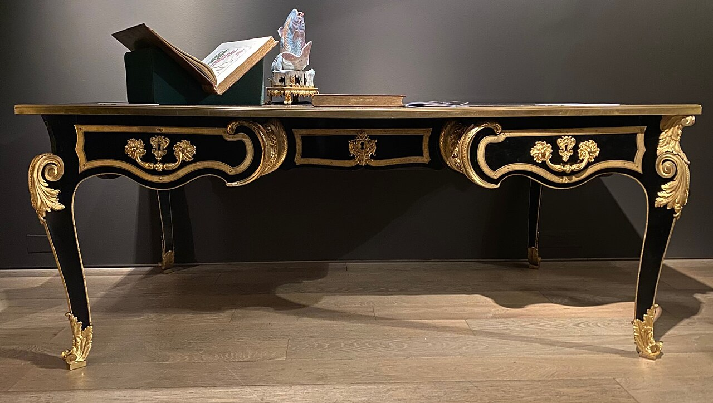

Een werkdag aan mijn bureau

Vandaag begon ik mijn werkdag vroeg. Na een kop koffie ruimde ik eerst mijn bureau op, want een opgeruimde werkplek helpt me om me te concentreren.
Daarna ging ik aan de slag met de planning van de week. Aan het einde van de dag kijk ik graag terug op wat er allemaal gelukt is.